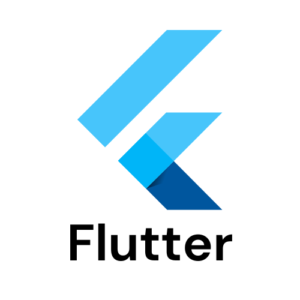
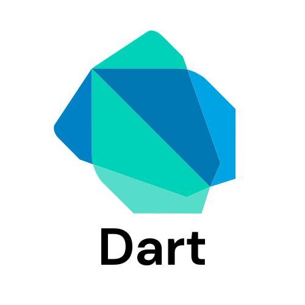
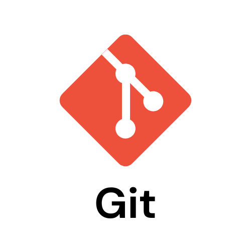
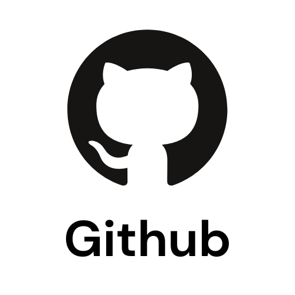
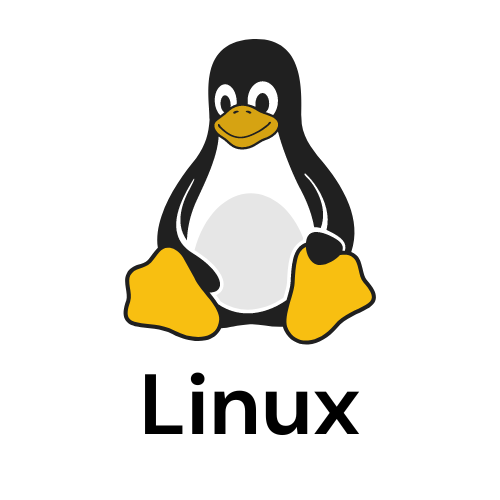
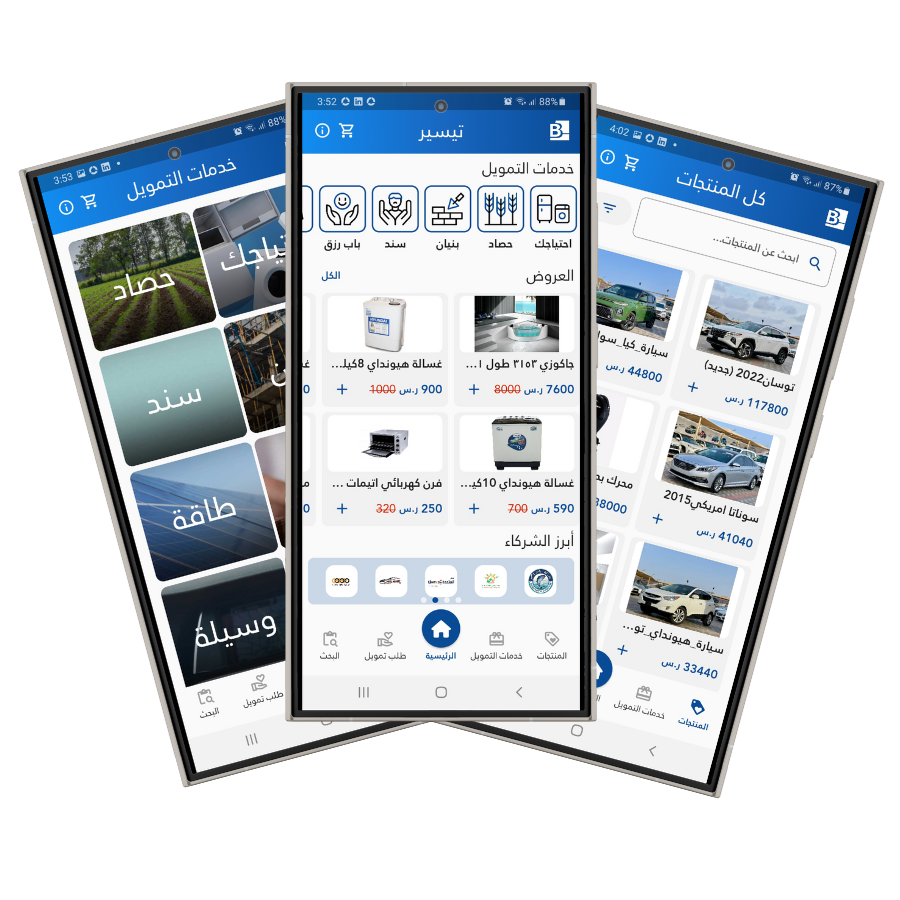
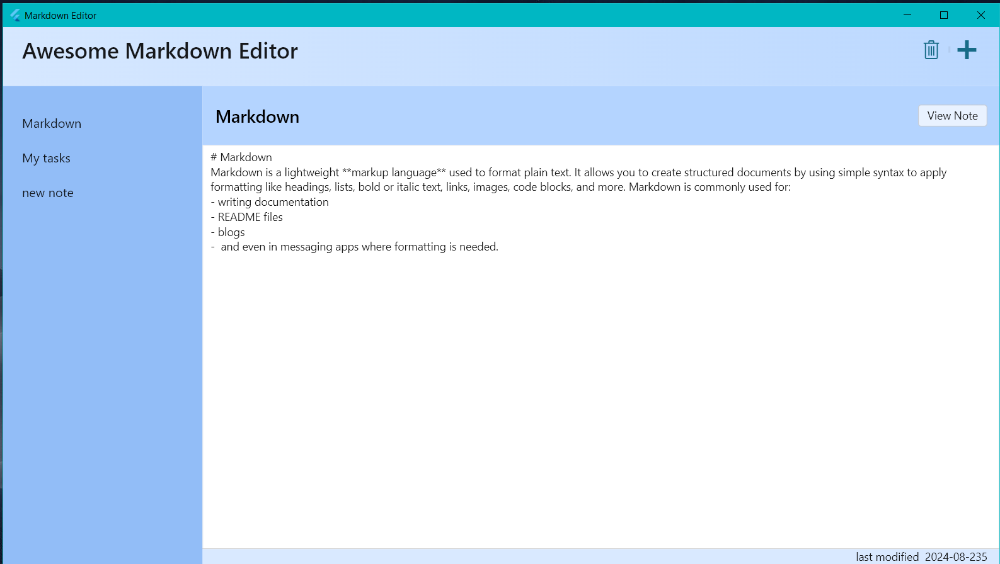
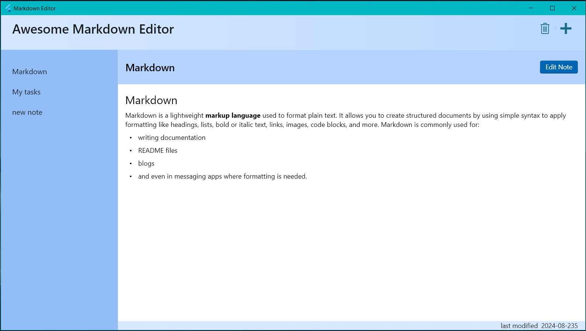
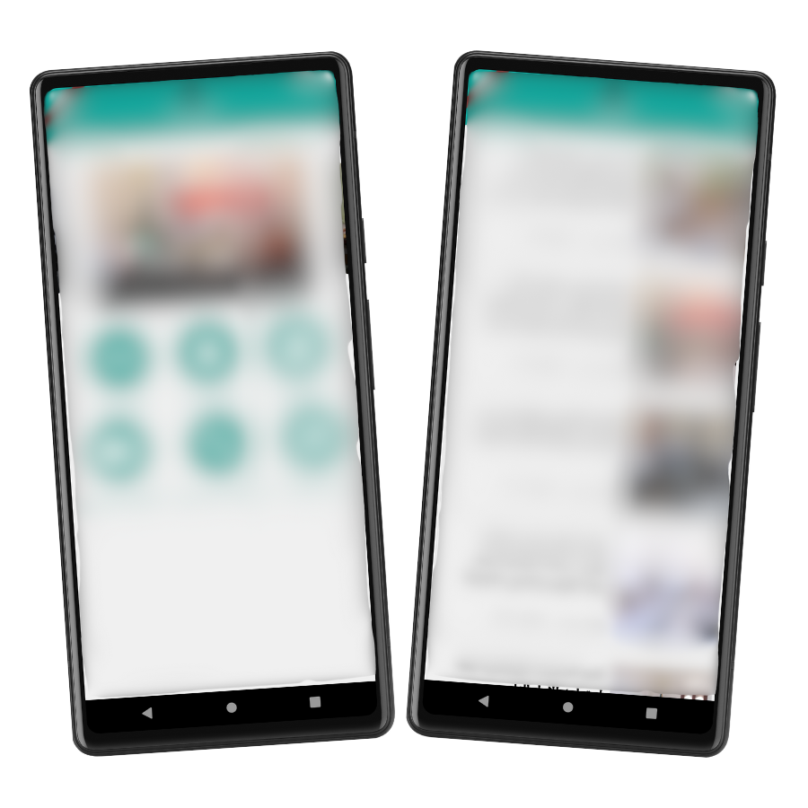

Welcome! I'm Mareai
Thanks for stopping by 😀

I am a passionate mobile application developer committed to making a meaningful impact through technology. I value achievement, responsibility, and integrity, and I consistently strive to deliver exceptional results through hard work and dedication. My goal is to create innovative solutions that not only meet but exceed expectations, contributing positively to the world around me.






Tayseer by Al-Busairi Microfinance Bank is a cutting-edge mobile application designed to streamline the financing process for customers seeking to purchase products. With Tayseer, customers can effortlessly browse and select products from partnered merchants, then submit a financing request directly through the app. Once the request is sent, our finance team promptly reviews it and reaches out to finalize the process, making the journey from selection to ownership seamless and efficient.
Technologies: Flutter and Laravel
Google Play App Store

As a passionate advocate of the Markdown language, which I use daily with the Obsidian app, I embarked on a project to develop my own simple Markdown desktop application. This endeavor was driven by a desire to deepen my understanding of the underlying mechanics of Markdown editors and to appreciate the craftsmanship involved in creating powerful tools like Obsidian.
The app, designed with simplicity and functionality in mind, allows users to write, edit, and preview Markdown documents seamlessly. Through this project, I explored key areas of application development, including user interface design, text parsing, and cross-platform compatibility. The experience has not only enhanced my technical skills but also strengthened my appreciation for the meticulous work required to create sophisticated productivity tools.
Technologies: Flutter
